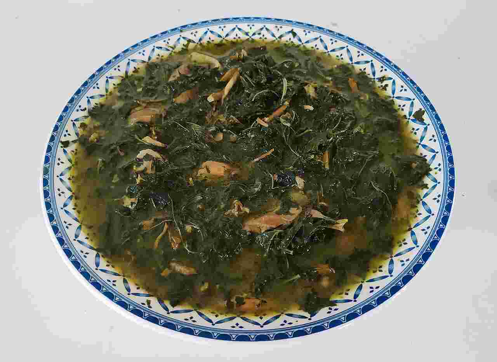

My favourite meals
"A recipe has no soul. You, as the cook, must bring soul to the recipe." Thomas Keller
-
Grilled Chicken
it is vey good choice, especially when it is crispy.

-
Roasted Fish
delicious meal, it is famous in the coastal cities.

-
Mulukhiyah
it is origanally Arabian, it is made with rice.1
